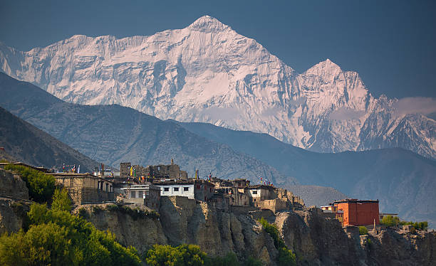
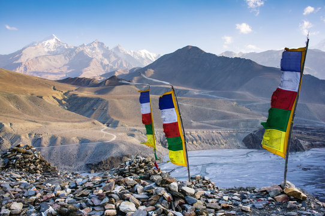
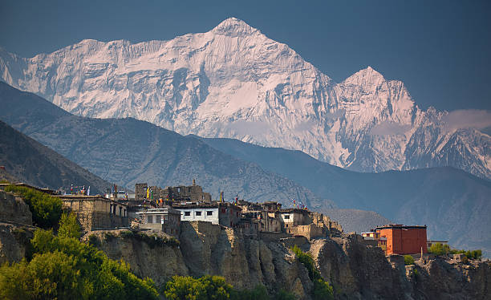
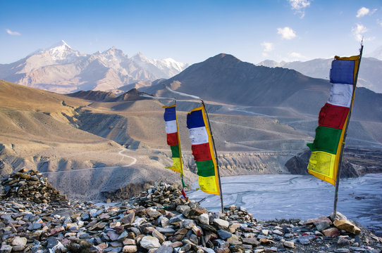

Muktinath
Situated at an altitude of 3,710 meters at the base of the Thorong La mountain pass in the Mustang ,Muktinath is a highly venerated sacred place for both Hindus and Buddhists. Hindus call the site Mukti Kshetra, which literally means the "place of salvation" and it is one of the most ancient temples of the God Vishnu and the Vaishnava tradition in Nepal.

Jomson-Muktinaath Trek
The Jomsom to Muktinath trek in the Mustang region of Nepal offers an incredible insight into this ancient and spiritual landscape. Jomsom has been a trekking destination in Nepal for many decades, and provides a nice jumping off point for exploring the lower Mustang region and the pilgrimage site at Muktinath.

Annapurna Circuit
Trek through the incredible Annapurna region and be awed by the Nepalese Himalayas. These snow-capped peaks, mist-shrouded valleys, isolated communities and remote monasteries will inspire those with a bold spirit and a yearning for a definitive nature experience.
Lho Manthang
Lo Manthang (3,800m) is an isolated Tibetan settlement that was founded in 1380 and Capital ancient city of Upper Mustang. It is 90 kilometers from Jomsom. The city was one of the kingdoms when Nepal was in a monarchy system. The village is covered by the wall so that Lo Manthang is also called a walled city of Upper Mustang.
 


